دليل اللاعب
لعبة صيد الضبان بالواقع المعزز في حيّك، وحرب أونلاين في قرية نجدية، وبطولات بكؤوس. هذا الدليل يشرح كل شيء من أول ضب إلى الكأس.
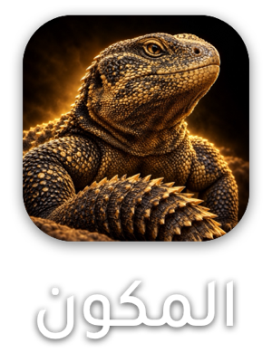
المكون لعبة من قسمين يكمّلون بعض:
ما فيه تسجيل دخول ولا كلمة سر: أول ما تفتح اللعبة ينعمل لك ملف لاعب، وتختار اسمك وشخصيتك.
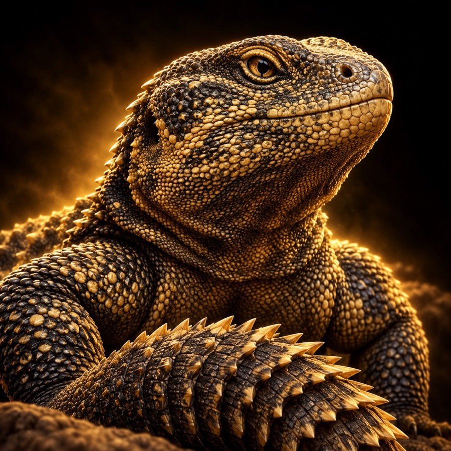
الخريطة تعرض الضبان اللي في حدود كيلو واحد منك. ضبان الحدائق البعيدة (اللي في حدود ٣ كم) وضبان المماشي تشوفها من أبعد عشان تعرف وين تروح.
ضب شخصي لك قريب من مكانك، يرجع لك كل ٢٤ ساعة بعد ما تصيده. حتى لو ما حولك حدائق.
أقرب حديقة لك في حدود كيلو تنزل فيها ٣ ضبان كل يوم. إذا ما فيه حديقة في كيلو، تاخذ أقرب حديقة في ٣ كم وتشوف ضبانها من بعيد.
أقرب ممشى عام منك في حدود ٥ كم ينزل فيه ٣ ضبان يومياً، وتقدر تشوفها على الخريطة من ٥ كم.
كل صيدة معتمدة تُحسب في ملفك وترفع مستواك. التدريب أوفلاين ونتائج الحرب ما ترفع المستوى.
عشرة مستويات، كل مستوى له اسم وصورة. تطلع حسب عدد صيدك المعتمد في مدينتك:
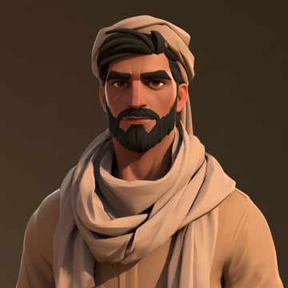
١ · راعي البرمن البداية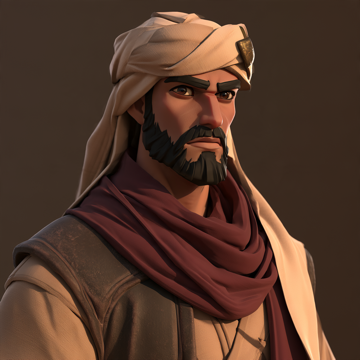
٣ · قصّاص أثر١٥ صيدة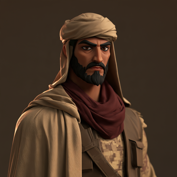
٥ · قنّاص الوادي٥٠ صيدة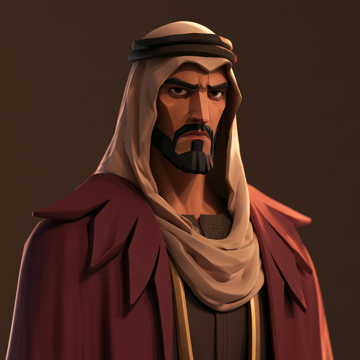
٧ · شاهين البر١٠٥ صيدات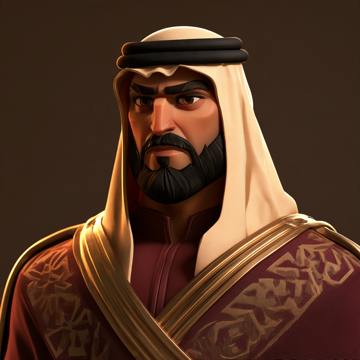
١٠ · أسطورة نجد٢٢٥ صيدة| المستوى | الاسم | الصيد المطلوب | المستوى | الاسم | الصيد المطلوب |
|---|---|---|---|---|---|
| ١ | راعي البر | ٠ | ٦ | خبير الجحور | ٧٥ |
| ٢ | متتبّع الأثر | ٥ | ٧ | شاهين البر | ١٠٥ |
| ٣ | قصّاص أثر | ١٥ | ٨ | ذيب المقناص | ١٤٠ |
| ٤ | عين النفود | ٣٠ | ٩ | شيخ الصيادين | ١٨٠ |
| ٥ | قنّاص الوادي | ٥٠ | ١٠ | أسطورة نجد | ٢٢٥ |
زر «قائمة الصدارة» في بطاقتك يفتح ترتيب الصيادين حسب الصيد المعتمد. ترتيبك يظهر في البطاقة (مثل #٥).
أول ثلاثة في قائمة الصدارة ياخذون تاج يظهر جنب اسمهم في كل مكان. التاج يتغيّر مع الترتيب: إذا سبقك أحد ينتقل له.
من صفحة الحرب تدخل قرية نجدية كاملة: بيوت طين وبير ونخل وجحور. تتحرك بعصا التحكم، تصوّب بسحب الشاشة، وتستخدم الزوم والقرفصاء والانبطاح والتعبئة والإطلاق. الضغط مرتين على العصا يقفز.
التصويت على وقت المباراة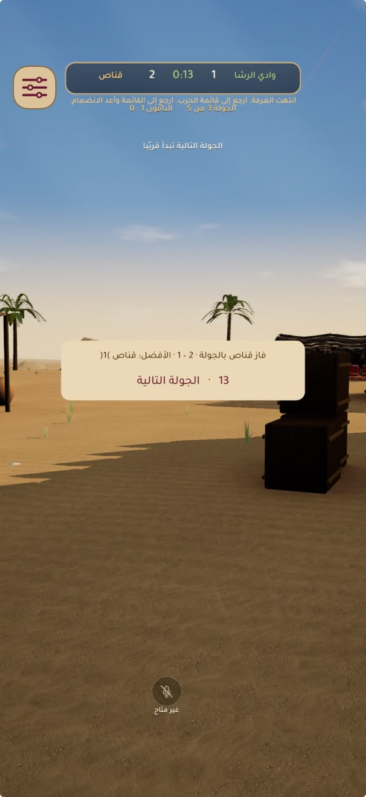
إذا انصبت تشوف اللقطة من عين اللي أصابك، وفي نهاية المباراة «لقطاتي» بكل إصاباتك. تقدر تشارك أي لقطة كمقطع.
بين الجولات تطلع لقطة الجولة. إذا كل اللاعبين ضغطوا «تخطي اللقطة» تبدأ الجولة الجاية على طول.
محادثة صوتية مع فريقك من زر المايك. ومن إعدادات اللعبة تقدر تلعب الحرب بالعرض وتضبط الأصوات.
من ملف أي لاعب يقبل التحديات اضغط «تحدي». إذا قبل، تدخلون مباراة Search and Destroy واحد ضد واحد، أفضل من ٣ جولات: أول من ياخذ جولتين يفوز.
النتيجة تنحسب في ملفك (فوز / خسارة) وينشرها حساب «المكون» في المجلس. ما فيه تعادل: إذا تعادلتم في الجولة الحاسمة ينزل ضب الحسم (اقرأ تحته).
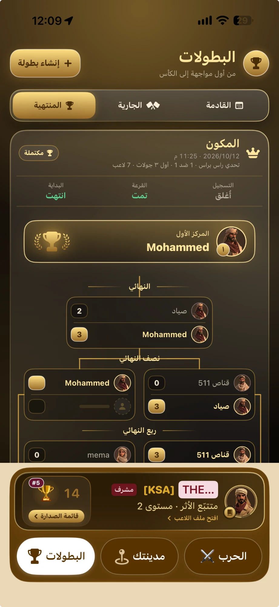
إذا وصلت المباراة للجولة الحاسمة (١-١ من ٣، أو ٢-٢ من ٥) وانتهى وقتها والاثنين أحياء:
في راس براس تروح المباراة مباشرة لطور الضب: مقدمة ٥ ثوانٍ مع صوت، ثم يطلع ضب سريع عند البير في وسط القرية. ما أحد يقدر يضر الثاني، واللي يصيد الضب أول يفوز. المهلة ٣ دقايق.
في بطولات الفرق يصوّت الفريقان: صيد الضب أو كشف اللاعبين. في الكشف تظهر أسماء وصور الكل من بعيد ومن ورا الجدران لمدة ٣ دقايق إضافية.
كؤوس البطولات في ملف اللاعب، وضب الحسم.تأكد أن الموقع مسموح للعبة. الضبان تظهر في حدود كيلو منك، وضبان الحديقة البعيدة أو الممشى من أبعد. إذا انتقلت لمدينة ثانية، اللعبة تربطك تلقائياً بأقرب حديقة في مكانك الجديد خلال دقايق. وضب البيت يرجع لك كل ٢٤ ساعة مهما كان مكانك.
لازم تكون على بعد ٣٠ متر أو أقل من الضب، وتنتظر لين يتحدد موقعك بدقة. امشِ باتجاهه شوي وانتظر ثانية.
الأسماء فريدة في اللعبة كلها، وبعض الأسماء محجوزة. غيّر حرفاً أو أضف رقماً.
المستوى من الصيد المعتمد في مدينتك فقط: ضب البيت يومياً، وضبان الحديقة والممشى. الحرب والتدريب ما ترفع المستوى، لكن الحرب تعطيك خبرة وكؤوس الفرق.
الغرفة انتهت من جهة السيرفر (مثلاً خرج كل اللاعبين). اللعبة ترجعك لقائمة الحرب تلقائياً خلال ثوانٍ وتقدر تبدأ مباراة جديدة.
المشرفون فقط. اللاعبون يسجلون ويلعبون ويشاهدون. بعض البطولات تشترط مستوى أدنى للتسجيل.
التحدي مباراة واحدة بينك وبين لاعب تختاره أنت، وقتها أنتم تحددونه. البطولة جدول مواجهات لعدة لاعبين في وقت محدد، والفائز ياخذ كأس.
دليل لعبة المكون · إصدار ١.٠.٧. الأرقام والمسافات في هذا الدليل هي قواعد اللعبة الحالية وقد تتغيّر مع التحديثات.
الأصدقاء والمجلس والفرق
الأصدقاء
أضف أصدقاءك من ملفاتهم، وابحث بالاسم في قائمتك. إذا دعاك صديق إلى جلسة حرب يوصلك إشعار، وتدخل معه مباشرة.
المجلس والحي
محادثة عامة لكل اللاعبين ومحادثة لحيّك. الحساب «المكون» حساب رسمي ينشر نتائج التحديات والبطولات تلقائياً. المشرفون ينظمون المجلس ويقدرون ينشئون بطولات.
الفرق
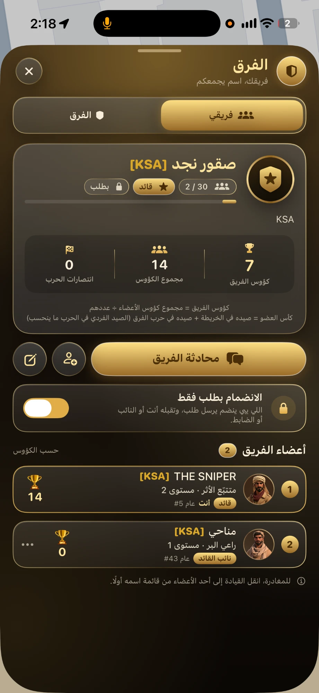